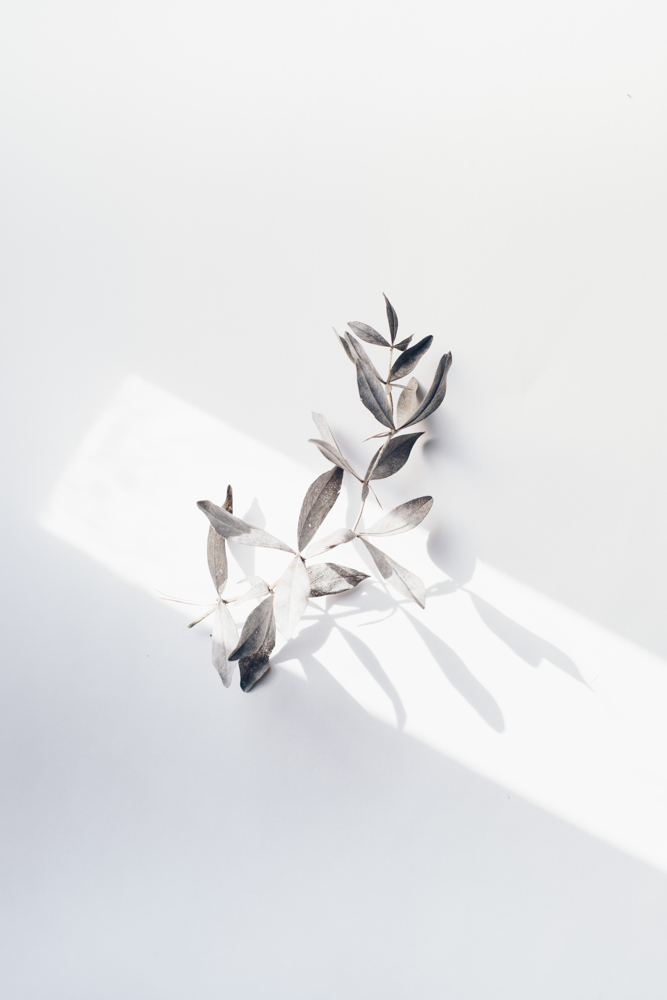
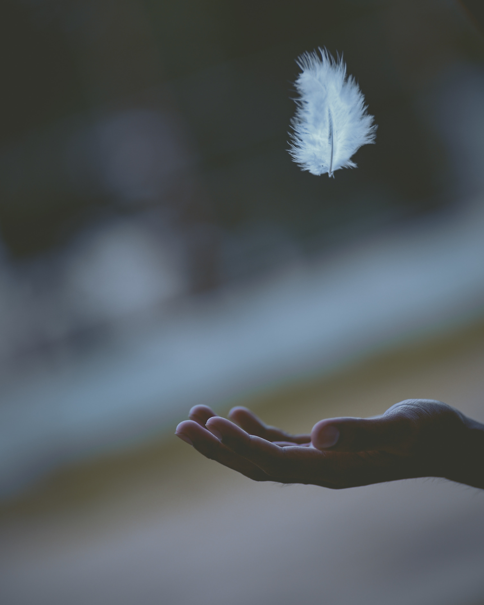

Alternate-Nostril Breathing
- Choose a comfortable seated position.
- Lift up your right hand toward your nose, pressing your first and middle fingers down toward your palm and leaving your other fingers extended.
- After an exhale, use your right thumb to gently close your right nostril.
- Inhale through your left nostril and then close your left nostril with your right pinky and ring fingers.
- Release your thumb and exhale out through your right nostril.
- Inhale through your right nostril and then close this nostril.
- Release your fingers to open your left nostril and exhale through this side.
- This is one cycle.
- Continue this breathing pattern for up to 5 minutes.
- Finish your session with an exhale on the left side.

Sitali Breathing
- Choose a comfortable seated position.
- Stick out your tongue and curl your tongue to bring the outer edges together.
- If your tongue doesn't do this, you can purse your lips instead.
- Inhale through your mouth.
- Exhale out through your nose.
- Continue breathing like this for up to 5 minutes.

Deep Breathing
- While standing or sitting, draw your elbows back slightly to allow your chest to expand.
- Take a deep inhalation through your nose.
- Retain your breath for a count of 5.
- Slowly release your breath by exhaling through your nose.
Humming Bee Breath (Bhramari)
- Choose a comfortable seated position.
- Close your eyes and relax your face.
- Place your first finger on the tragus cartilage that partially covers your ear canal.
- Inhale. Then as you exhale, gently press your fingers into the cartilage.
- Keeping your mouth closed, make a loud humming sound.
- Continue for as long as is comfortable.

Lion's Breath
- Come into a comfortable seated position. You can sit back on your heels or cross your legs.
- Press your palms against your knees with your fingers spread wide.
- Inhale deeply through your nose and open your eyes wide.
- At the same time, open your mouth wide and stick out your tongue, bringing the tip down toward your chin.
- Contract the muscles at the front of your throat as you exhale out through your mouth by making a long "ha" sound.
- You can turn your gaze to look at the space between your eyebrows or the tip of your nose.
- Do this breath 2 to 3 times.

Diaphragmatic Breathing
- Lie on your back with your knees slightly bent and your head on a pillow.
- You may place a pillow under your knees for support.
- Place one hand on your upper chest and one hand below your rib cage, allowing you to feel the movement of your diaphragm.
- Slowly inhale through your nose, feeling your stomach pressing into your hand.
- Keep your other hand as still as possible.
- Exhale using pursed lips as you tighten your stomach muscles, keeping your upper hand completely still.

Pursed-Lip Breathing
- Relax your neck and shoulders.
- Keeping your mouth closed, inhale slowly through your nose for 2 counts.
- Pucker or purse your lips as though you were going to whistle.
- Exhale slowly by blowing air through your pursed lips for a count of 4.

Resonance Breathing
- Inhale for a count of 5.
- Exhale for a count of 5.
- Continue this breath pattern for at least 5 minutes.

Breath Focus Technique
- Sit or lie down in a comfortable place.
- Bring your awareness to your breaths without trying to change how you're breathing.
- Alternate between normal and deep breaths a few times. Notice any differences between normal breathing and deep breathing. Notice how your abdomen expands with deep inhalations.
- Note how shallow breathing feels compared to deep breathing.
- Practice your deep breathing for a few minutes.
- Place one hand below your belly button, keeping your belly relaxed, and notice how it rises with each inhale and falls with each exhale.
- Let out a loud sigh with each exhale.
- Begin the practice of breath focus by combining this deep breathing with imagery and a focus word or phrase that will support relaxation (like "peace").
- You can imagine that the air you inhale brings waves of peace and calm throughout your body. Mentally say, "Inhaling peace and calm."
- Imagine that the air you exhale washes away tension and anxiety. You can say to yourself, "Exhaling tension and anxiety."
Equal Breathing
- Choose a comfortable seated position.
- Breathe in and out through your nose.
- Count during each inhale and exhale to make sure they are even in duration. Alternatively, choose a word or short phrase (like "peace") to repeat during each inhale and exhale.
- You can add a slight pause or breath retention after each inhale and exhale if you feel comfortable. (Normal breathing involves a natural pause.)
- Continue practicing this breath for at least 5 minutes.